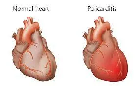
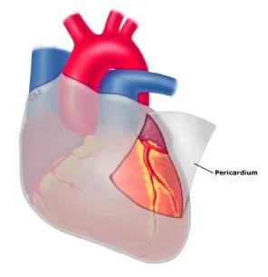
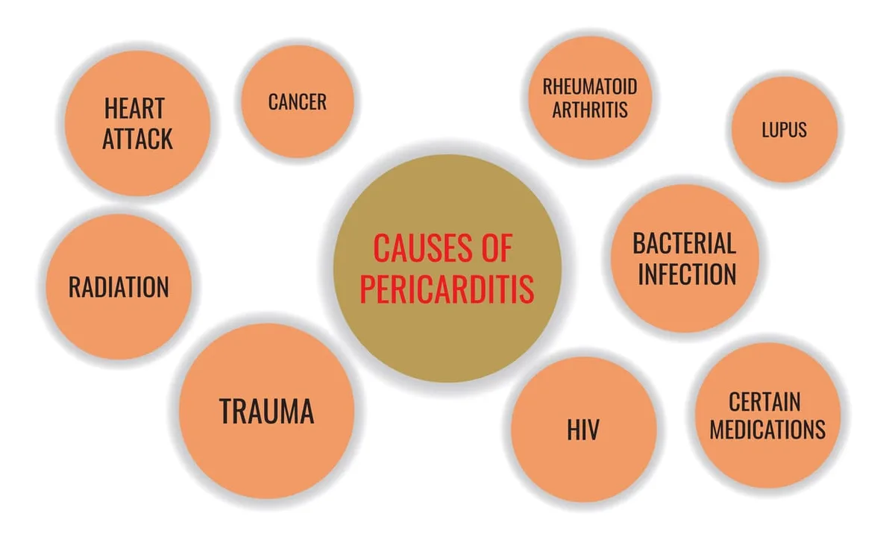
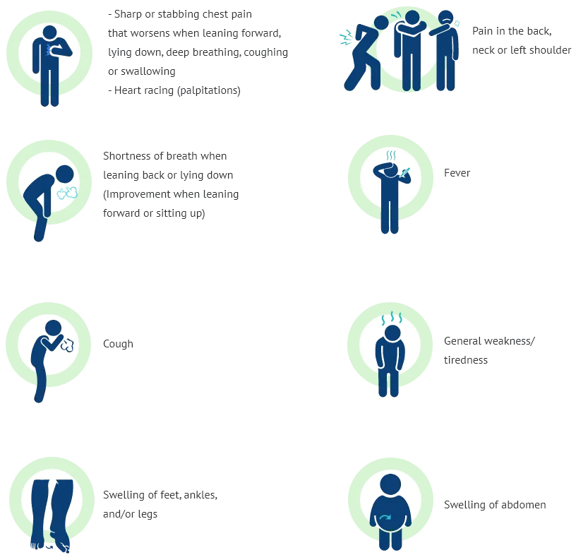
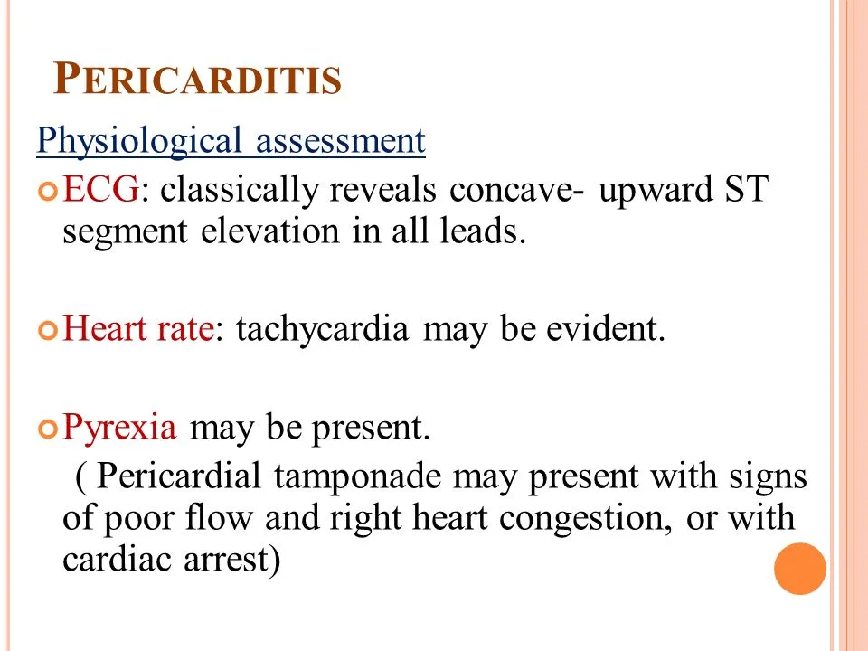

Expanded Nursing Uganda Explanation
Pericarditis should be understood beyond a short definition. Link the concept to patient history, focused assessment, common risks, nursing priorities, documentation and evaluation of outcomes.
01 Overview
Pericarditis is the inflammation of the pericardium, a double-layered sac that encloses the heart and the roots of the great vessels (aorta, pulmonary artery, vena cavae). This sac provides protection, lubrication, and helps to anchor the heart within the chest cavity. When inflamed, the layers of the pericardium can rub against each other, causing characteristic pain and other symptoms.
The pericardium is a thin, two-layered, fluid-filled sac that covers the outer surface of the heart.(normal volume of the fluid is around 50ml)
- It also prevents the heart from over-expanding when blood volume increases, which keeps the heart functioning efficiently.
- It shields the heart from infection or malignancy and contains the heart in the chest wall.
Pericarditis can be caused by various factors, with idiopathic (unknown cause) being the most common, often suspected to be viral in origin.
- Viral: Most common cause of acute pericarditis (e.g., coxsackievirus, echovirus, influenza, HIV).
- Bacterial: Less common but more severe (e.g., tuberculosis, staphylococcal, streptococcal).
- Fungal and Parasitic: Rare, typically in immunocompromised individuals.
- Autoimmune Diseases: Systemic inflammatory conditions like Systemic Lupus Erythematosus (SLE), rheumatoid arthritis, scleroderma, and inflammatory bowel disease.
- Myocardial Infarction (Heart Attack): Early Post-MI Pericarditis: Occurs within a few days of a heart attack due to inflammation from myocardial necrosis.
- Dressler's Syndrome (Post-cardiac Injury Syndrome): An autoimmune reaction occurring weeks to months after a heart attack, cardiac surgery, or trauma.
- Uremia: Occurs in patients with kidney failure due to the buildup of toxins (uremic pericarditis).
- Malignancy: Cancer spreading to the pericardium (e.g., lung cancer, breast cancer, lymphoma).
- Trauma: Injury to the chest or heart, including iatrogenic (due to medical procedures).
- Radiation Therapy: Can lead to acute or chronic pericarditis.
- Drugs: Certain medications (e.g., procainamide, hydralazine, isoniazid) can induce drug-induced lupus-like syndromes with pericardial involvement.
- Metabolic Disorders: Hypothyroidism (myxedema).
Infections are a common cause, particularly viral, leading to acute pericarditis. Other pathogens are less frequent but can cause more severe disease.
- Viral: This is the most common cause of acute pericarditis. Viruses directly infect and inflame the pericardium. Common culprits: Coxsackievirus B (most frequent), Adenovirus, Echovirus, Influenza virus (A and B), Parvovirus B19, Herpesviruses (CMV, EBV, VZV), HIV.
- Mechanism: Direct viral invasion and replication within pericardial cells, triggering an inflammatory response.
- Bacterial: Less common in developed countries due to widespread antibiotic use, but can be severe, often leading to purulent (pus-filled) pericarditis. Pyogenic (Pus-forming) Bacteria: Staphylococcus aureus, Streptococcus pneumoniae (Pneumococci), other Streptococci.
- Routes of Infection: Hematogenous spread (from bloodstream, e.g., septicemia), direct extension from adjacent infections (e.g., pneumonia, empyema), or direct inoculation (e.g., cardiac surgery, trauma).
- Tuberculosis (TB): A significant cause in endemic areas. Tuberculous pericarditis can lead to chronic, constrictive pericarditis.
- Fungal: Rare, typically seen in immunocompromised individuals. Examples: Histoplasma capsulatum, Candida species, Aspergillus.
- Parasitic: Extremely rare in most regions, but important in specific geographic areas. Example: Toxoplasma gondii, Entamoeba histolytica (amoebic pericarditis), Echinococcus (hydatid cyst).
A significant proportion of pericarditis cases are not caused by direct infection but rather by systemic conditions, injury, or other inflammatory processes.
- Autoimmune/Inflammatory Diseases: Conditions where the immune system mistakenly attacks the body's own tissues. Systemic Lupus Erythematosus (SLE): Pericarditis is a common manifestation of lupus.
- Rheumatoid Arthritis (RA): Less common, but can cause pericardial involvement.
- Scleroderma (Systemic Sclerosis): Can lead to pericardial effusion and thickening.
- Ankylosing Spondylitis: A chronic inflammatory disease primarily affecting the spine, but can have cardiac manifestations.
- Inflammatory Bowel Disease (IBD): (Crohn's disease, Ulcerative colitis) can have extra-intestinal manifestations, including pericarditis.
- Rheumatic Fever: An inflammatory disease that can develop as a complication of untreated streptococcal infection, affecting the heart (rheumatic carditis), joints, brain, and skin. Pericarditis is one component of carditis.
- Post-Cardiac Injury Syndromes: Inflammatory reactions following damage to the heart or pericardium. Dressler's Syndrome (Post-Myocardial Infarction Syndrome): An immune-mediated inflammation of the pericardium that occurs weeks to months after a myocardial infarction (heart attack).
- Post-Pericardiotomy Syndrome (PPS): Occurs after cardiac surgery (e.g., bypass surgery, valve replacement, pacemaker insertion) due to inflammation from surgical trauma.
- Trauma: Direct chest trauma (e.g., blunt force, penetrating injuries) can cause pericardial injury and inflammation.
- Metabolic Disorders: Uremia: Occurs in patients with severe kidney failure (end-stage renal disease) due to the accumulation of metabolic toxins that irritate the pericardium. It typically does not respond to anti-inflammatory drugs and requires dialysis.
- Myxedema (Severe Hypothyroidism): Can lead to pericardial effusion due to increased capillary permeability and fluid retention.
- Malignancy (Cancer): Metastatic Cancer: Cancer cells can spread to the pericardium from primary tumors (e.g., lung cancer, breast cancer, lymphoma, leukemia, melanoma). This often leads to malignant pericardial effusion.
- Primary Pericardial Tumors: Very rare (e.g., mesothelioma).
- Radiation-Induced Pericarditis: Can occur as a complication of radiation therapy to the chest for cancer treatment (e.g., breast cancer, Hodgkin's lymphoma). Can manifest acutely or years after treatment.
- Acute Myocardial Infarction (MI): Early pericarditis can occur in the first few days after a transmural (ST-elevation) MI due to inflammation over the necrotic myocardial tissue.
- Aortic Dissection: If an aortic dissection extends into the pericardial sac, it can cause hemopericardium (blood in the pericardial sac) and acute pericarditis-like pain. This is a medical emergency.
- Drug-Induced Pericarditis: Certain medications can trigger a lupus-like syndrome or direct pericardial inflammation. Examples: Isoniazid, Procainamide, Hydralazine, Phenytoin, Minoxidil, Cyclosporine, Anthracyclines (some chemotherapy drugs).
- Idiopathic Pericarditis: When no specific cause can be identified despite thorough investigation, it is termed idiopathic. This is the most common diagnosis for acute pericarditis, often presumed to be viral.
The acute inflammatory response in pericardium can produce either serous or purulent fluid, or a dense fibrinous material. In viral pericarditis, the pericardial fluid is most commonly serous, is of low volume, and resolves spontaneously.
Neoplastic, tuberculous, and purulent pericarditis may be associated with large effusions that are exudative, hemorrhagic, and leukocyte filled.
Gradual accumulation of large fluid volumes in the pericardium, even up to 250 mL, may not result in significant clinical signs.
Beck's triad is a collection of three medical signs associated with acute cardiac tamponade. The signs are:
- Low arterial blood pressure
- Distended neck veins
- Distant, muffled heart sounds.
Chest pain symptoms associated with pericarditis can be described as:
- Sharp and stabbing chest pain (caused by the heart rubbing against the pericardium). May increase with coughing, deep breathing or lying flat.
- Can be relieved by sitting up and leaning forward.
- You may also feel the need to bend over or hold your chest to breathe more comfortably.
The symptoms of pericarditis can range from mild to severe and may mimic other cardiac conditions. The classic symptoms include:
- Chest Pain: Character: Typically sharp, stabbing, or pleuritic (worsens with deep breath, cough, or swallowing). Can also be dull, aching, or pressure-like.
- Location: Usually substernal (behind the breastbone) or precordial (over the heart), often radiating to the left shoulder, neck, trapezius ridge (shoulder blade area), or back.
- Aggravating Factors: Worsens with lying flat (supine position), deep inspiration, coughing, swallowing, and sometimes with movement.
- Relieving Factors: Often eased by sitting up and leaning forward. This position reduces pressure on the inflamed pericardium.
- Pericardial Friction Rub: A characteristic scratching, grating, or squeaking sound heard during auscultation of the heart, caused by the inflamed pericardial layers rubbing against each other. It is best heard with the diaphragm of the stethoscope over the left sternal border, with the patient leaning forward and exhaling. This is a highly specific sign.
- Dyspnoea (Shortness of Breath): May be due to pleuritic chest pain limiting deep breaths, or in severe cases, due to pericardial effusion leading to cardiac tamponade.
- Low-Grade Fever: Common, especially in infectious causes.
- Fatigue and Malaise: Generalized symptoms due to the inflammatory process.
- Palpitations: Can occur if the inflammation irritates the heart muscle or conductive system.
- Cough: May be present due to irritation of the airways or associated pleural inflammation.
- Anxiety: Often results from the frightening nature of chest pain and other symptoms.
Remember “Friction” (as previously noted) and also consider the more comprehensive "PERICARDITIS" mnemonic for key features:
- Friction rub pericardial (sounds like a grating, scratching sound), Fever
- Radiating substernal pain to left shoulder, neck or back
- Increased pain when in supine position (leaning forward relieves pain)
- Chest pain that is stabbing (will feel like a heart attack)
- Trouble breathing when lying down (supine position)
- Inspiration or coughing makes pain worse
- Overall feels very sick and weak
- Noticeable ST segment elevation on ECG (often widespread concave up)
- P leuritic chest pain (worsens with breathing)
- E CG changes (widespread ST elevation, PR depression)
- R ub (pericardial friction rub)
- I ncreased pain with supine position
- C ough, fever, malaise (flu-like symptoms)
- A utoimmune disease history
- R adiation to trapezius ridge (classic finding)
- D ifficulty breathing (dyspnoea)
- I ncreased pain with inspiration
- T reatment with NSAIDs (often effective)
- I diopathic or Infectious cause (viral most common)
- S itting up and leaning forward relieves pain
Pericarditis is classified based on its temporal course and characteristics:
- Acute Pericarditis: Onset: Sudden and rapid.
- Duration: Typically resolves within 3 weeks.
- Characteristics: Often associated with severe chest pain and a pericardial friction rub. Usually self-limiting, but can recur.
- Common Causes: Viral infections, idiopathic.
- Incessant Pericarditis: Duration: Lasts for more than 4-6 weeks but less than 3 months, with continuous presence of symptoms and signs without remission.
- Characteristics: Symptoms persist despite initial treatment, indicating ongoing inflammation.
- Recurrent Pericarditis: Onset: Occurs after a symptom-free interval of at least 4-6 weeks following an acute episode.
- Characteristics: Can be very distressing for patients, with repeated episodes of chest pain and inflammation. Often requires long-term management.
- Causes: Often idiopathic, but can be associated with autoimmune conditions.
- Chronic Pericarditis: Duration: Develops slowly and lasts for more than 3 months.
- Characteristics: Can lead to pericardial thickening and fibrosis, potentially progressing to more serious conditions like constrictive pericarditis. Symptoms may be less acute but persistent.
- Constrictive Pericarditis: Nature: A serious complication of chronic pericarditis where the pericardium becomes thick, rigid, and fibrotic.
- Mechanism: This hardened sac restricts the heart's ability to expand and fill with blood properly during diastole.
- Consequences: Leads to impaired cardiac filling, elevated venous pressures, and symptoms of right-sided heart failure (e.g., severe edema, ascites, jugular venous distension).
Diagnosing pericarditis involves a combination of clinical assessment, specific tests to confirm inflammation, identify the cause, and assess for complications.
- History: Detailed inquiry about chest pain characteristics (onset, location, radiation, aggravating/relieving factors), fever, recent infections, autoimmune conditions, trauma, medications, and travel history.
- Physical Exam: Pericardial Friction Rub: The hallmark sign, a scratching or squeaking sound best heard with the diaphragm of the stethoscope over the left sternal border, with the patient leaning forward and holding their breath in expiration.
- Signs of Pericardial Effusion/Tamponade: Muffled heart sounds, pulsus paradoxus, jugular venous distension, hypotension (late signs).
- Signs of Systemic Disease: Rash, joint swelling (suggesting autoimmune disease).
- Electrocardiography (ECG): Classic Findings: Widespread ST-segment elevation (concave upwards) in most leads (unlike MI, which is localized and convex), and PR-segment depression (especially in leads II, aVF, V5, V6). These changes reflect inflammation of the epicardium.
- Evolution: ECG changes typically evolve over days to weeks, from ST elevation to T-wave inversion, then normalization.
- Echocardiography (Echo): Purpose: The most important imaging test. It is essential for assessing for pericardial effusion (fluid around the heart) and its hemodynamic significance (e.g., signs of cardiac tamponade).
- Information Provided: Can visualize the pericardium, quantify effusion size, assess cardiac chamber size and function, and identify signs of cardiac tamponade (e.g., right ventricular diastolic collapse, paradoxical septal motion).
- Cardiac CT scan/MRI: Cardiac Computed Tomography (CT): Useful for visualizing pericardial thickening, calcification (in constrictive pericarditis), and large effusions. Can help differentiate pericardial disease from myocardial disease.
- Cardiovascular Magnetic Resonance Imaging (MRI): Provides excellent soft tissue characterization. It is the gold standard for detecting pericardial inflammation, edema, and fibrosis. Can also differentiate constrictive pericarditis from restrictive cardiomyopathy.
- Blood Tests: Inflammatory Markers: C-reactive protein (CRP) and Erythcyte Sedimentation Rate (ESR) are usually elevated.
- Cardiac Biomarkers: Troponin (I or T) may be mildly elevated in myopericarditis. CK-MB and Myoglobin may be checked.
- Infectious Workup: Viral Serology, Bacterial Cultures (blood/fluid), TB Tests (PPD, IGRAs, AFB stains).
- Autoimmune Markers: ANA, RF, Anti-dsDNA if autoimmune disease is suspected.
- Renal Function Tests: BUN and Creatinine to assess for uremia.
- Radionuclide Scanning (e.g., PET scan): May be used in complex cases to detect areas of active inflammation or malignancy, particularly if other tests are inconclusive.
- Pericardiocentesis and Pericardial Biopsy: Pericardiocentesis: A procedure to drain fluid from the pericardial sac. Indicated for large effusions, signs of cardiac tamponade, or for diagnostic purposes.
- Pericardial Biopsy: Rarely performed, but may be considered in cases of chronic or recurrent pericarditis with an unknown etiology.
Nursing care for patients with pericarditis focuses on pain management, monitoring for complications, providing emotional support, and patient education.
- Goal: Relieve pain, reduce inflammation, prevent complications (e.g., cardiac tamponade, constrictive pericarditis), and treat the underlying cause.
- Setting: Mild cases may be managed outpatient, while moderate to severe cases, or those with complications, require hospitalization.
Patients with mild, uncomplicated pericarditis often respond well to conservative measures and oral medications.
- Pain Assessment and Management: Assess Patient’s Pain: Characterize the pain (sharp, stabbing, dull), location, radiation, and aggravating/relieving factors. Use a pain scale (e.g., 0-10) to quantify severity. Pericarditis pain can be excruciatingly painful.
- Positioning for Pain Relief: Keep patient in a high Fowler’s position (sitting upright) or encourage leaning forward. Avoid a supine (lying flat) position, as it exacerbates pericardial pain by increasing pressure on the inflamed pericardium.
- Monitoring for Complications (e.g., Cardiac Tamponade): Constant Vigilance: Cardiac tamponade is a life-threatening complication that requires immediate recognition and intervention.
- Key Signs to Monitor (Beck's Triad): Muffled or Distant Heart Sounds, Jugular Venous Distension (JVD) with Clear Lungs, Hypotension.
- Other Signs: Pulsus Paradoxus, Tachycardia, narrowed pulse pressure, decreased urine output, cool extremities, altered mental status.
- Administer Medications as Prescribed by Physician: High-dose Aspirin: Often used, especially for post-MI pericarditis.
- NSAIDs (e.g., Ibuprofen, Indomethacin): The cornerstone of treatment for acute pericarditis. Administer with food/milk. Monitor for GI bleeding.
- Colchicine: An anti-inflammatory agent increasingly used as first-line therapy or in combination with NSAIDs. Do not take with grapefruit juice.
- Corticosteroids (e.g., Prednisone): Reserved for patients who do not respond to NSAIDs/Colchicine or have specific etiologies. Taper slowly.
- IV Antibiotics: Administered if bacterial pericarditis is diagnosed or strongly suspected.
These patients require more intensive monitoring and often invasive procedures.
- Comprehensive Assessment: Establish good rapport, take detailed history, and perform continuous observations of vital signs.
- Pain Management Intensified: Continue positioning for relief, monitor pain levels continuously, and administer stronger analgesics (e.g., morphine) if needed.
- Intensive Cardiac Monitoring: Hourly assessment for cardiac tamponade signs and continuous ECG monitoring.
- Fluid Balance and Hemodynamic Support: Careful maintenance of I&O, daily weight checks, oxygen administration to maintain SpO2 >90%, and IV antihypertensives if needed.
- Medication Administration and Monitoring: Administer meds with food to reduce GI side effects and ensure timely antibiotics if bacterial.
- Patient Education and Psychological Support: Discuss disease process, reduce anxiety, prepare for procedures, educate on post-surgical care and activity progression, and teach warning signs for home.
- Bowel and Bladder Care: Provide bedside commode and assist with bathing to conserve energy.
- Monitoring for Specific Complications: Closely monitor for persistent cough, vomiting, or systolic BP >180 mmHg.
- Intervention Category Action & Rationale/Detail
- Pain Management and Comfort Assess pain level regularly using a standardized scale. Evaluate effectiveness of analgesics within 30-60 mins. Administer meds promptly. Position patient in high Fowler's or leaning forward (avoid supine). Provide non-pharmacological relief (guided imagery, distraction).
- Vital Signs and Hemodynamic Monitoring Monitor vitals frequently. Continuously monitor ECG for ST-T changes. Assess for signs of cardiac tamponade (muffled sounds, JVD, hypotension, pulsus paradoxus) every 4-8 hours or PRN. Monitor for signs of decreased cardiac output. Administer O2 to maintain SpO2 > 90%.
- Medication Administration and Monitoring Administer NSAIDs/Corticosteroids with food/milk to minimize GI irritation. Educate on side effects. Monitor for adverse effects (GI bleeding, hyperglycemia, diarrhea). Ensure timely antibiotic administration if prescribed.
- Fluid Balance and Nutritional Support Maintain accurate I&O records. Monitor daily weights. Encourage oral fluids unless contraindicated. Provide easily digestible diet. Assist with feeding if fatigued.
- Activity and Rest Ensure bed rest during acute phase (until fever/pain/rub resolve). Assist with ADLs. Provide bedside commode to reduce straining. Educate on gradual return to activity.
- Patient Education and Psychological Support Explain disease process and treatment. Reassure that pain is likely not an MI. Build rapport. Provide psychological support. Explain procedures (e.g., pericardiocentesis). Educate on warning signs of recurrence or complications. Discuss medication adherence.
- Monitoring for Other Complications Monitor for persistent cough, vomiting, or systolic BP >180 mmHg. Assess for signs of chronic/constrictive pericarditis (persistent JVD, ascites, edema).
- Related to: Inflammatory process of the pericardium.
- As evidenced by: Verbalization of severe chest pain ("10 out of 10", sharp, stabbing), facial grimacing, guarding, restlessness, increased HR/BP, pain exacerbated by breathing/coughing/lying supine, pain relieved by leaning forward.
- Related to: Inflammatory process (e.g., infection, autoimmune response).
- As evidenced by: Body temp > 38.0°C, flushed skin, warm to touch, increased HR/RR, sweating/chills, malaise.
- Related to: Impaired ventricular filling due to pericardial inflammation and/or effusion.
- As evidenced by: Fatigue, weakness, inability to perform ADLs, shortness of breath, tachycardia, hypotension, weak pulses, cool skin, delayed capillary refill, decreased urine output, altered mental status, abnormal hemodynamics.
- Related to: Acute chest pain, decreased cardiac output, and systemic inflammation.
- As evidenced by: Verbalization of fatigue/weakness after exertion, dyspnea on exertion, disinterest in ADLs, need for increased rest, changes in vitals with activity.
- Related to: Chest pain of unknown etiology, fear of serious cardiac event (e.g., heart attack), threat to health status.
- As evidenced by: Verbalization of fear/worry, increased HR/RR, restlessness, crying, sleep disturbances, questioning prognosis.
- Related to: Insufficient knowledge of the disease process, treatment regimen, and potential for recurrence.
- Related to: Fever-induced diaphoresis, nausea/vomiting impacting oral intake, aggressive diuretic therapy.
- Related to: Decreased lung expansion due to large pericardial effusion, reduced cardiac output impacting pulmonary perfusion.
- Related to: Invasive procedures (e.g., pericardiocentesis, pericardiectomy).
- As evidenced by: Surgical incision/puncture site, disruption of skin integrity, invasive lines.
While most cases of acute pericarditis are benign and self-limiting, complications can occur, ranging from mild to life-threatening.
- Pericardial Effusion: Accumulation of excess fluid within the pericardial sac. Can range from small to large and rapidly accumulating.
- Cardiac Tamponade: A medical emergency where a large or rapidly accumulating effusion compresses the heart, restricting filling. Leads to decreased cardiac output, hypotension, and shock. Requires urgent drainage.
- Recurrent Pericarditis: Episodes recur after a symptom-free interval. Often requires long-term anti-inflammatory therapy.
- Chronic Pericarditis: Persists > 3 months. Can lead to thickening/fibrosis.
- Constrictive Pericarditis: Severe, long-term complication where the pericardium becomes thick, rigid, and fibrotic, preventing proper filling. Causes right-sided heart failure symptoms. Treatment often requires pericardiectomy.
- Myocarditis (Myopericarditis): Inflammation of the heart muscle occurring concurrently. Can lead to myocardial dysfunction and arrhythmias.
- Fatal Hemorrhage: Rare but catastrophic, associated with trauma, iatrogenic injury, or vessel rupture.
- Stroke/Paraplegia/Abdominal Ischemia: Severe complications specifically associated with Aortic Dissection if it involves great vessels or spinal/abdominal blood supply. If dissection causes hemopericardium, it mimics pericarditis but requires different emergency management.
02 Nursing Uganda Clinical Lens
Use Pericarditis as a practical nursing topic, not only a memorized definition. Prioritize airway, breathing, circulation, pain, asepsis, wound healing and early complication detection.
- What to understand first: define pericarditis, identify the normal or expected pattern, then explain what changes when the patient is unwell.
- Why it matters in care: the nurse must recognize risk early, explain findings clearly, document accurately and know when to escalate.
- How to revise it: connect each point to assessment, nursing diagnosis or care problem, intervention, rationale and evaluation.
03 Assessment Guide
- Vital signs, pain, bleeding, perfusion, level of consciousness and injury pattern.
- Wound appearance, drainage, odour, swelling, temperature and surrounding skin.
- Fluid balance, mobility, nutrition, surgical site risk and ordered investigations.
04 Nursing Priorities, Rationales and Outcomes
- Stabilize urgent problems first, then prepare for investigations or theatre care.
- Maintain aseptic technique, pain control, wound care and documentation.
- Prevent shock, infection, pressure injury, deep vein thrombosis and delayed healing.
The rationale for these priorities is patient safety: nursing actions should prevent deterioration, reduce discomfort, support recovery and create clear evidence for the next caregiver.
- Expected outcome: The patient remains stable, wound healing progresses, pain is controlled and complications are recognized early.
05 Patient Teaching and Revision Check
- Explain pericarditis in simple language the patient or caregiver can repeat back.
- Teach warning signs, medicine or follow-up instructions, hygiene or lifestyle points where relevant.
- For exams, prepare a short answer using: definition, causes or risk factors, signs, assessment, management, complications and prevention.
- For ward practice, document baseline findings, actions taken, patient response and the plan for review.
Illustrations and Diagrams (13)







5 more diagrams available, open the lesson for full illustrations.
Related Video Lectures
Watch nursing lecture videos on YouTube for this topic. Opens in a new tab.
Watch on YouTubeExternal link: YouTube may use its own cookies and terms. Nursing Uganda is not affiliated with YouTube.